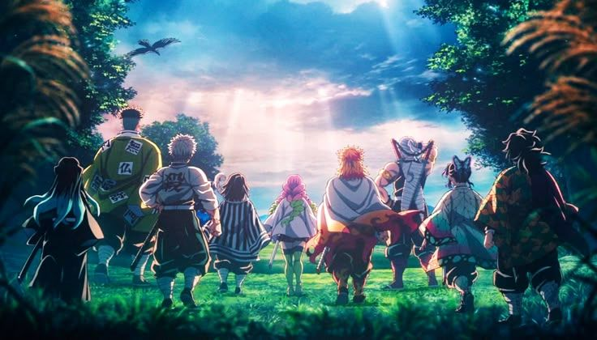

Los Pilares (Hashira) son los nueve espadachines de más alto rango dentro del Cuerpo de Cazadores de Demonios. Cada uno de ellos posee una fuerza sobrehumana y domina un estilo de respiración específico, siendo la última línea de defensa de la humanidad contra Muzan Kibutsuji.
Giyu Tomioka (Pilar del Agua): Utiliza la Respiración del Agua. Es extremadamente técnico y creó una undécima postura llamada "Calma", que le permite anular cualquier ataque enemigo.
Shinobu Kocho (Pilar del Insecto): Debido a su falta de fuerza física para decapitar demonios, usa la Respiración del Insecto y una espada con veneno de glicinia para matar a sus oponentes desde adentro.
Kyojuro Rengoku (Pilar de la Llama): Maestro de la Respiración de la Llama. Su estilo se basa en ataques explosivos y una voluntad inquebrantable que quema con la intensidad del fuego.
Tengen Uzui (Pilar del Sonido): Un ex-shinobi que utiliza la Respiración del Sonido. Su habilidad "Partitura" le permite leer los movimientos enemigos como si fueran una melodía musical.
Mitsuri Kanroji (Pilar del Amor): Posee una densidad muscular ocho veces superior a la normal. Utiliza la Respiración del Amor con una espada flexible similar a un látigo.
Muichiro Tokito (Pilar de la Niebla): Un prodigio que se convirtió en Pilar en solo dos meses. Usa la Respiración de la Niebla para confundir a los enemigos con movimientos rápidos y oscurecidos.
Gyomei Himejima (Pilar de la Roca): Considerado el más fuerte de todos. A pesar de ser ciego, domina la Respiración de la Roca usando un hacha y un mangual encadenados.
Obanai Iguro (Pilar de la Serpiente): Utiliza la Respiración de la Serpiente. Su estilo de combate es sinuoso e impredecible, permitiéndole atacar desde ángulos imposibles.
Sanemi Shinazugawa (Pilar del Viento): Un guerrero feroz que usa la Respiración del Viento. Su sangre es especial ("Marechi"), lo que marea y desorienta a los demonios que la huelen.